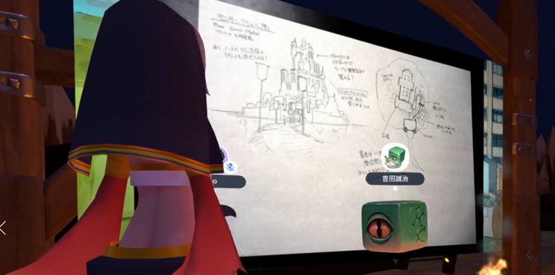
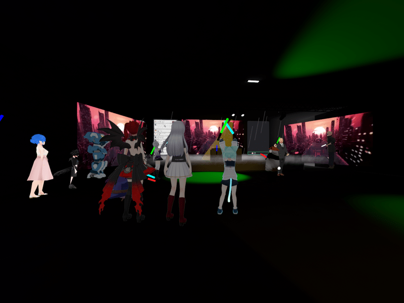
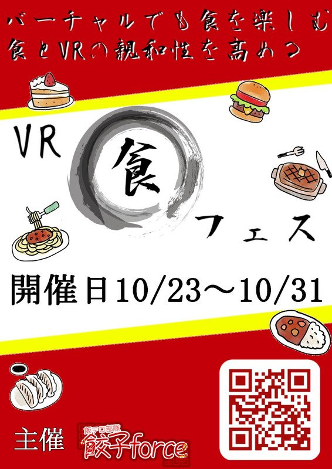
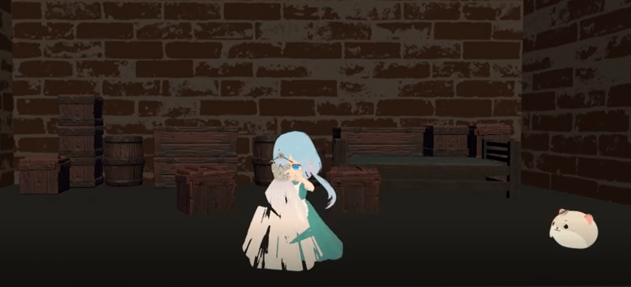
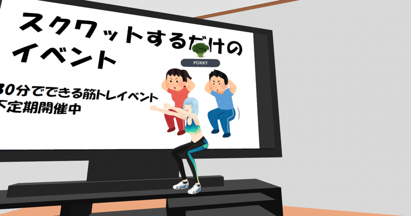
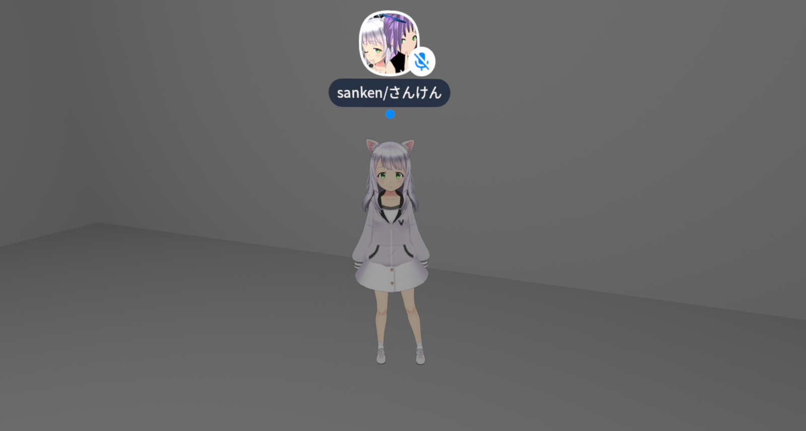
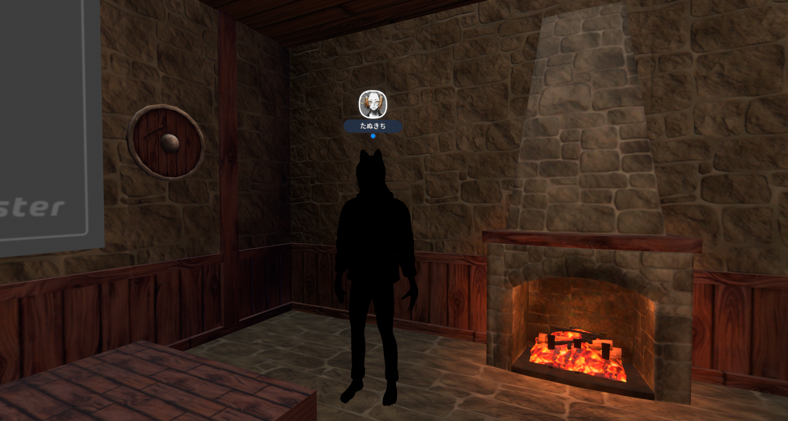

建築物や人物を手掛ける背景グラフィッカ、イラストレータの吉田誠治氏。「ものがたりの家」などの作品で知られている有名アーティストです。clusterのアバターマーケット2021のコンセプトデザインを担当されています。そこでClustimesでは突撃インタビューを実施しました。
－－ コンセプトデザインをしていて楽しかったことを教えて下さい。
吉田氏：普段はパソコンのゲームや一枚絵を描く平面のデザインをしているのですが、今回は立体物のデザインで、僕のやってきた専門分野とは違うんです。ですがこれまでつくったデザインの建物も立体で観てほしいと思っていました。実はアバターを着て歩いてみたんですが、それだけでもすでに楽しいですね。
－－ 今回のコンセプトアートを書く中で影響を受けた作品はありますか？
吉田氏：SF的な世界観で意識したのは、テリーギリアムの「未来世紀ブラジル」ですね。夢の中の世界と現実世界を行き来し、管理社会の中で右往左往するストーリーなのですが、その夢の中の世界が本当に好きで、イメージしています。
それと「八つ墓村」や「犬神家の一族」などのビジュアルからも影響を受けていますね。
それ以外に影響を受けているのが「SIREN」というゲームの「屍人の巣」です。台風の中、外山監督（SIRENの製作者）にサインをねだりに行ったくらいファンです（笑）
そのSIRENの終盤にでてくる複合的な建物をイメージしてます。
あとは「デリカテッセン」や、「ロストチルドレン」、「エイリアン4」を手掛けるジャン＝ピエール・ジュネ監督の影響も受けてますね。
－－ アバターの並べ方で工夫したさられましたか？
吉田氏：これまでのイベントを見させていただいて、アバターの展示は固まってない方がいいなと思っていました。
会場が2つに分かれていて、アバターが展示されているところがいくつかある。そうして下の会場を上の会場から見下ろすというイメージです。
これまで色々なワールドを見てきましたが、高低差を効果的に使ったワールドをあまり見たことがないんですね。
上から見下ろしたときに、にぎやかさを感じられると私は思っています。
特にたくさんのアバターで同時に集まれるのがclusterの利点なので、それを見るためには上から俯瞰して見られるようにしたい。そのためにまずは下の方でスポーンして、階段を上がって、上の会場から下の会場を俯瞰してみたときに現実的な空間の体験を感じられると思います。
（インタビュー：オリゴ糖&滝竜三 構成：ふろすと）

clusterで自作楽曲などを披露するパフォーマー達が集まるワールドがあります。それが「Beginner's Live House」です。その名の通りライブハウスを模したワールドで、ライブ演出の豊富さ。
こだわられたライティングやパーティクルの演出などで、演奏を盛り上げます。
ワールドを作成したのは滝竜三さん。ワールドやアバターの制作を手掛けるクリエイターの一人でありclusterでの音楽イベントの仕掛け人としても活躍中、複数の音楽イベントを主催しています。
このワールドは火曜日、木曜日、土曜日の22時から24時まで定期営業を実施しており、この時間に同ワールドを訪れると多くのオーディエンスが訪れています。他愛もない雑談をしているときもあれば、ライブハウスだけあって音楽トークに花が開いているときもあります。
また、時には弾き語りやオリジナル楽曲を演奏するパフォーマーもワールドを訪れ、突発ライブが行われることもあります。スケジュールにもイベント一覧にも載ってないゲリラライブ、運が良ければそんな貴重なパフォーマンスを見ることができるかも。
そういった偶然の出会いもあり、つい通いたくなるワールドの1つです。
（でんこ）


2021年10月23日(土)～10月31日(日)にかて、“食”に関する展示を行うVRイベント「VR食フェス」が開催されます。
主催はVR SNSを中心に餃子を始めとした“食”の魅力を伝える「飯テロ部隊 餃子force」。
イベントは「VRChat」と「cluster」にて開催予定です。
展示ジャンルは以下の7ジャンル。
・食材
・料理
・飲み物
・お菓子
・調理器具
・リアルの食品関係
・その他
上記ジャンルの展示のほか、フェス開催時にはイベントの企画も予定しています。
詳細や続報は「餃子force」公式Twitterをチェックしてください。
（バーチャルライフマガジン）
ぱんだ歌劇団 第3公演『レギーナと魔法の鏡 snow white』が6月12日にVRChat上で行われ、およそ1か月が過ぎる頃、cluster上でイベントページがお披露目されました。
その名は、ぱんだ歌劇団 cluster公演『シンデレラ』
VRChat上の演劇とは違い、劇団員全員がSDキャラで演技するという試みで、会場をclusterのシステムで制御して演劇のステージが変わる仕組みでした。
というわけで行ってきました！
感想レポートとして、まず、プラットフォームの違いがあげられます。
可視化できる収容人数、ギフト機能、等です。お客さんのフィードバックが目に見えるため、劇に観客が一体となって参加する。ということができていました。
劇の内容に関しては、自分がまず驚いたのは、劇中での感情の起伏のコントロールです。
劇中のキャラクターごとの個性が引き立っているため、まるでそのキャラクターに感情移入しているかのようでした。
具体的には、シンデレラが
お手製のドレスをもらうのですが、義姉たちによって、そのドレスをぼろぼろにされてしまいます。
そのとき、観客たちは一斉にビックリマークのエモーションをし、観客全体の空気が変わったのです。
（坂本ふろすと）

不定期に現れる「スクワットするだけのイベント」をご存知でしょうか？そのイベントに行き運動慣れしていない人にも配慮された活動に感心した記者（以下「記」）はイベントの主催者POKKYさん（以下「PO」）の元を訪問した。
記：POKKYさんと筋肉の出会いはいつですか？
PO:筋肉って生まれた時からあるものじゃないですか。生まれた時から私達の体を支えているわけですね。
記：確かにそうですね！ではなぜclusterで筋トレを？
PO:筋肉を鍛えるのが目的じゃなくて、運動不足解消……まあ言っちゃえば健康のためですね。
記：それでスクワットを？
PO:実は、裏の目的として、VR機器の布教という目的もあったりします。なぜスクワットかというとこれには微妙に浅い裏話がありまして
記:浅いんだ
PO：浅い。半裸の男性がスクワットをしている映像が延々と流れるイベントがありまして。そこでスクワットをしている方がいたので、便乗して私もスクワットを始めたんですね。そしたら「VRで誰かと運動するの楽しいじゃないか」と
記：割と偶然だった
PO:そのとおりです！今は移動して集まるのも一苦労なので一緒だと楽しいし、スクワットはVR映えするので！
記：なるほど、楽しい！
不定期の「スクワットするだけのイベント」clusterのイベント一覧で探して、参加してみてください！
(so1_)

clusterで出会った人たちにひとことインタビューする連載企画。
Q1.clusterを始めたきっかけは？
Q2.普段clusterでどのように過ごしてる？
Q3.今後clusterでやってみたいことは？
の3つの質問をしていきます。
今回ご回答いただいたのは「sanken/さんけん」さんと「たぬきち」さんのお二人。
【「sanken/さんけん」さん】
A1.VRの割にはスマホで簡単に始められそうだったから
A2.いろんなワールド探検してます
A3.ワールド作ってそこでイベントしたいです‼︎

【「たぬきち」さん】
A1.Realityが連携されたから
A2.作業をしながらおしゃべりをしている
A3.パーティクルライブ

（滝竜三）